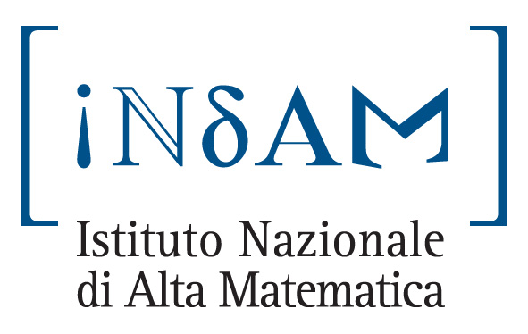

At the moment the signature of the agreement is
scheduled for the 09/05/2005 in Rome during an official reception at the
French Embassy.
This is the text of the agreement italian
version, french version.
The GREF-MEFI is coordinated by Pierre Picco. Sandro Vaienti
is the French Adjoint Coordinator and Carlangelo
Liverani the Italian Adjoint Coordinator.
The Governing Body of the GREFI-MEFI consists, beside the Coordinators, of
the following people:
The GREFI-MEFI (Gruppo di Ricerca Europeo Franco-Italiano: Fisica e
Matematica) is a French-Italian GDRE (Gruppo di Ricerca Europeo) that will
be created
by an agreement between the CNRS and INDAM.
ITALY: Dario Bambusi,
Anna De Masi,
Fabio Martinelli,
Mario
Pulvirenti.
FRANCE:
Viviane Baladi,
Thierry Goudon,
Stefano Olla,
Senya
Shlosman.
Researchers with a scientific project
compatible with the GREF-MEFI aims can apply (by e-mail) for support
directly to the Coordinator or one of the national Adjoint Coordinators.
Clik here for the Grefi-Mefi OFFICIAL
PAGE